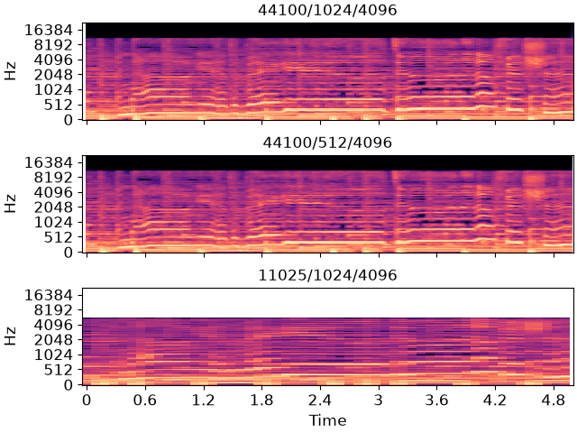

Note
Go to the end to download the full example code.
Presets
This notebook demonstrates how to use the presets package to change the
default parameters for librosa.
# Code source: Brian McFee
# License: ISC
We’ll need numpy and matplotlib for this example
import numpy as np
import matplotlib.pyplot as plt
# Import the Preset class
from presets import Preset
# To use presets, we'll make a mock import of librosa
import librosa as _librosa
- By default, librosa uses the following parameters across all functions:
sr=22050 (sampling rate)
hop_length=512 (number of samples between frames)
n_fft=2048 (number of samples per frame in STFT-like analyses)
You may want to change these values to suit your application, but doing so consistently in every function call can be somewhat cumbersome.
Presets makes it easy to do this all at once by wrapping the module and all function calls, and overriding default arguments.
# First, we need to set up the preset-wrapped librosa import
librosa = Preset(_librosa)
# To change the default sampling rate, we can set the `sr` entry:
librosa['sr'] = 44100
# and similarly for hop_length and n_fft
librosa['hop_length'] = 1024
librosa['n_fft'] = 4096
# In general, when you set `librosa['X']` for any string `X`, anywhere within
# librosa where the parameter `X` occurs as a keyword-argument,
# its default value will be replaced by whatever value you provide.
Now we can load in a file and do some analysis with the new defaults
filename = librosa.ex('fishin')
y, sr = librosa.load(filename, duration=5, offset=35)
# Generate a Mel spectrogram:
M = librosa.feature.melspectrogram(y=y)
# Of course, you can still override the new default manually, e.g.:
M_highres = librosa.feature.melspectrogram(y=y, hop_length=512)
# And plot the results
fig, ax = plt.subplots(nrows=3, sharex=True, sharey=True)
librosa.display.specshow(librosa.power_to_db(M, ref=np.max),
y_axis='mel', x_axis='time', ax=ax[0])
ax[0].set(title='44100/1024/4096')
ax[0].label_outer()
librosa.display.specshow(librosa.power_to_db(M_highres, ref=np.max),
hop_length=512,
y_axis='mel', x_axis='time', ax=ax[1])
ax[1].set(title='44100/512/4096')
ax[1].label_outer()
# We can repeat the whole process with different defaults, just by
# updating the parameter entries
librosa['sr'] = 11025
y2, sr2 = librosa.load(filename, duration=5, offset=35)
M2 = librosa.feature.melspectrogram(y=y2, sr=sr2)
librosa.display.specshow(librosa.power_to_db(M2, ref=np.max),
y_axis='mel', x_axis='time', ax=ax[2])
ax[2].set(title='11025/1024/4096')

Total running time of the script: (0 minutes 0.544 seconds)